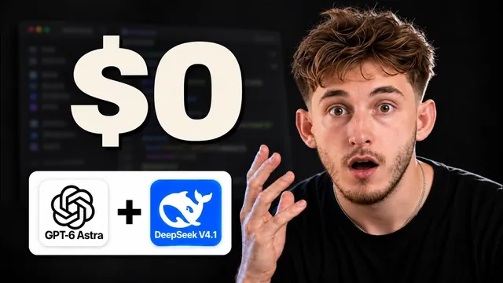

GPT-6 Astra + DeepSeek 4.1 = 최전선 조합

원본 영상 보기 →
- 마케팅 숫자와 실측 숫자는 다르다
- 싼 모델일수록 "지어내는" 리스크가 크다
- "만들기"와 "변형하기"를 분리하면 비용과 품질을 동시에 잡을 수 있다
한 줄 요약
"DeepSeek이 GPT-6 Astra보다 80배 싸다"는 마케팅 문구를 실제로 웹사이트·세일즈덱·제안서 세 가지 실무 작업으로 검증했더니, 진짜 절감 폭은 10배였고 그 차이만큼 정확도와 신뢰도에서도 차이가 났다.
전체 내용 정리
DeepSeek V4.1 Flash는 스펙상으로는 확실히 싸고 강하다
DeepSeek의 신형 모델 V4.1 Flash는 MIT 라이선스로 가중치가 공개돼 있어 누구나 다운로드해 자체 서버에서 돌리거나, 호스팅 업체에 비용을 내고 대신 돌리게 할 수 있다. 컨텍스트 길이는 약 100만 토큰으로, 책 약 1500페이지 분량을 한 번에 읽을 수 있는 수준이다. 벤치마크에서는 멀티스텝 업무 수행 능력을 측정하는 Automation Bench에서 Opus 5와 GPT-5.6보다 높은 점수를, 코딩 테스트인 Deep SWE에서는 Opus 5와 거의 동급 점수를 받았다. 다만 더 길고 어려운 과제를 다루는 Terminal Bench 3.0에서는 확실히 뒤처진다. 가격은 Astra가 입력 100만 토큰당 10달러·출력 50달러인 데 비해 DeepSeek는 입력 15센트·출력 60센트로, 단순 계산하면 약 80배 저렴하다. 단, 이 가격은 비수기 요금이고 평일 미국 동부시간 기준 밤 9시~자정, 새벽 2시~6시의 성수기에는 요금이 두 배로 뛴다. 미국 내 업무 시간대라면 대부분 저렴한 구간에 걸리므로 실무에서는 큰 문제가 아니다.
두 모델을 연동하는 방법 — Codex 안에서 Astra가 DeepSeek에 작업을 위임한다
설정은 이렇다. 먼저 deepseek.com에서 계정을 만들고 설정 → API 키 메뉴에서 새 키를 발급받는다. 테스트용으로 5~10달러 정도만 충전해도 충분한데, 실제로는 왠만한 작업이 1달러도 안 나온다. 그다음 Codex를 완전 접근 모드로 켜고 "DeepSeek 키를 추가하고 저장한 뒤 연결을 테스트하라"는 프롬프트를 GPT-6 Astra(또는 가벼운 버전인 Astra Light)에게 실행시키면 자동으로 연동이 끝난다. 이후 DeepSeek를 쓰는 방법은 두 가지다. 하나는 터미널에서 지정 명령어로 직접 DeepSeek 모델을 불러와 Codex를 그 모델로 구동하는 방식이고, 다른 하나는 실제로 더 자주 쓰는 방식으로 Codex 안에서 Astra에게 "이 작업은 DeepSeek에 위임하고 결과를 검토한 뒤 알려달라"고 지시하는 방식이다. 실제로 "유튜브 채널을 처음 시작하고 키우는 전략을 짜되 DeepSeek에 위임하라"고 지시하자 Astra가 DeepSeek에 작업을 넘기고, 결과를 검토·수정한 뒤 실무적으로 다듬어 돌려줬다. 즉 Astra가 전략을 짜고 잡무성 작업은 DeepSeek에 내리는 구조로 계속 활용할 수 있다.
첫 번째 실전 테스트 — HVAC(냉난방) 회사 랜딩페이지
같은 브리핑으로 두 모델에게 서비스 소개·후기·서비스 지역·FAQ·스크롤 애니메이션이 들어간 랜딩페이지를 하나의 파일로 만들게 했다. Astra는 6분 걸렸고 API 기준 82센트였다. 결과물은 집 그림이 들어간 세리프 헤드라인, 서비스 카드, 서비스 지역 지도, 스크롤 시 페이드인 되는 섹션까지 깔끔하고 정돈된 느낌이었다. DeepSeek는 절반 시간인 약 3분, 비용은 8센트로 훨씬 저렴했다. 디자인은 더 어둡고 테크한 느낌으로 카드가 떠 있는 듯한 레이아웃과 스크롤에 따라 올라가는 숫자 카운터, 서비스 지역 지도, 예약 폼까지 갖춰 완성도 자체는 준수했다. 다만 브리핑에 없던 사업 관련 세부 정보를 임의로 채워 넣은 문제가 있었다 — DeepSeek가 지시받지 않은 내용을 스스로 지어내는 경향을 보여준 첫 사례다.
같은 디자인으로 업종을 바꾸는 '리브랜딩' 작업에서 DeepSeek가 강점을 보였다
Astra가 완성한 냉난방 회사 랜딩페이지를 그대로 DeepSeek에 넘기고 "치과 브랜드로 바꿔달라"고 요청했다. 6분, 10센트 만에 디자인은 그대로 유지한 채 집 그림이 이빨 그림으로 바뀌었고, 지도 위치도 다른 도시로 옮겨졌으며 서비스·FAQ·후기 섹션도 모두 자연스럽게 바뀌었다. 이 부분이 이번 테스트에서 가장 실용적인 활용법으로 꼽힌다 — 마음에 드는 템플릿 하나를 비싼 모델로 만들어두고, 이후 변형 버전 수십 개는 저렴한 모델에 맡기는 방식이다. 웹사이트를 자주 만들거나 클라이언트에게 여러 버전을 제공해야 하는 업무라면 바로 적용할 수 있는 패턴이다.
세일즈덱과 제안서 테스트 — 속도는 DeepSeek가 우위, 정확성은 Astra가 우위
두 번째 테스트는 냉난방 3개 지점 업체를 위한, 부재중 전화를 AI가 대신 받아주는 시스템을 소개하는 8슬라이드 애니메이션 세일즈덱이었다. Astra는 5분 31초가 걸렸고, DeepSeek는 2분 44초로 약 두 배 빨랐으며 두 모델의 비용 차이는 이전 테스트만큼 크지 않았다. 겉보기에는 둘 다 애니메이션 숫자, 예약 버튼, 보장 문구, 단계별 안내가 들어간 완성도 높은 덱이었지만, 자세히 보면 DeepSeek 버전은 한 슬라이드의 일정이 그 슬라이드 자체 헤드라인과 맞지 않았고, 아무도 요청하지 않은 보장 조건을 임의로 추가한 문제가 있었다. 세 번째 테스트인 클라이언트 제안서(예산이 정해져 있고 이전 챗봇 업체에게 안 좋은 경험이 있는 냉난방 회사 상황)에서는 Astra가 1분 30초에 29센트, DeepSeek가 40초 미만에 3센트가 들었다. 두 제안서 모두 이전 업체에 대한 불만을 다루고, AI가 가격을 임의로 부르지 않는다는 점, 긴급 상황 대응 계획, 시스템을 언제든 끌 수 있다는 내용을 담고 있었지만 세부적인 신중함에서 차이가 났다. Astra는 한 지점에서 파일럿을 시작하고 지불을 마일스톤에 연동하며 추가 사용료에 상한선을 둔 반면, DeepSeek는 추가 요금에 상한을 두지 않았고 근거 수치 없는 성과 주장을 그냥 만들어 넣었다 — 사실상 없는 사실을 지어낸 것이다.
실제 절감 폭은 광고된 80배가 아니라 10배였고, 데이터 프라이버시 문제도 따로 고려해야 한다
전체 작업을 API 기준으로 합산하면 Astra는 총 1.92달러, DeepSeek는 18센트로 실제 절감 폭은 약 10배였다(속도는 매 작업에서 약 2배 빨랐다). 80배라는 숫자와 차이가 나는 이유는 토큰 단가가 아니라 토큰 사용량 때문이다 — DeepSeek는 Codex 안에서 같은 작업을 처리할 때 Astra보다 많게는 30배 넘는 토큰을 읽었고, 그중 대부분이 이미 본 텍스트에 적용되는 할인된 캐시 요금 덕분에 그나마 10배 절감으로 남은 것이다. 참고로 영상 제작자는 Astra를 챗GPT 구독제로 쓰고 있어 실제로는 추가 비용이 들지 않았고, 영상 속 Astra 비용은 API로 종량 과금했을 때를 가정한 수치다. 프라이버시 측면에서는 DeepSeek의 자체 정책상 데이터가 중국에 저장되며, 이탈리아·호주·대만과 미국의 일부 정부 기관이 이를 차단하거나 사용을 제한하고 있다. 다만 모델 자체가 오픈소스이기 때문에 Deep Infra나 Fireworks 같은 미국 업체가 같은 모델을 호스팅하고 있고, 이 중 Deep Infra는 입력 데이터를 저장하거나 학습에 쓰지 않는다고 명시하고 있어 고객 데이터가 걸린 작업이라면 이런 대안을 쓰거나 Astra로 돌리는 편이 안전하다.
핵심 인사이트
- 마케팅 숫자와 실측 숫자는 다르다: "80배 싸다"는 토큰 단가만 비교한 숫자이고, 실제 작업에서는 저렴한 모델이 같은 결과를 내기 위해 훨씬 더 많은 토큰을 쓰기 때문에 실질 절감폭은 그보다 작아진다. 어떤 도구든 비용을 검토할 때는 단가가 아니라 실제 작업당 총비용을 기준으로 판단해야 한다.
- 싼 모델일수록 "지어내는" 리스크가 크다: DeepSeek는 브리핑에 없는 정보를 채워 넣거나, 근거 없는 성과 수치를 자신 있게 제시하는 등 얕은 거짓 정보를 만들어내는 경향을 보였다. 클라이언트에게 그대로 나갈 수 있는 문서(제안서·계약 조건)는 반드시 상위 모델이나 사람이 최종 검수해야 한다.
- "만들기"와 "변형하기"를 분리하면 비용과 품질을 동시에 잡을 수 있다: 고가 모델로 원본(첫 랜딩페이지, 첫 전략, 첫 제안서)을 만들고, 이후의 반복·변형 작업(리브랜딩, 후속 버전, 초안)은 저가 모델에 맡기는 역할 분담이 이번 테스트에서 가장 안정적인 결과를 냈다.
오늘 당장 해볼 것
- 최근에 고가 AI로 처리한 반복적인 업무(제안서 초안, 랜딩페이지 변형, 후속 버전 작성 등)를 하나 골라, 저가 모델(DeepSeek 계열)로 같은 결과를 얼마나 싸고 빠르게 만들 수 있는지 업체나 담당 개발자에게 한 번 테스트해달라고 요청해본다.
- 클라이언트에게 나가는 문서(제안서, 견적서, 계약 조건)에는 반드시 "저가 모델이 만든 초안 → 상위 모델 또는 사람이 최종 검수"라는 2단계 체크 절차를 넣도록 업체에 요청한다.
- 지금 쓰고 있는 자동화 도구나 AI 서비스가 고객 데이터를 어느 나라 서버에 저장하는지, 데이터를 학습에 쓰는지 여부를 업체에 직접 물어보고 문서로 확인받아 둔다.